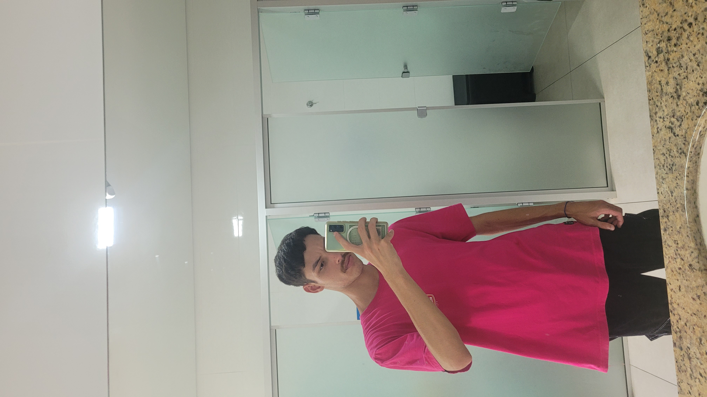

Sobre Mim
Olá! Sou o Deivid, um entusiasta da tecnologia e atualmente estou cursando o primeiro semestre de Sistemas de Informação. Desde cedo, a capacidade de criar soluções e inovações através da programação me fascina, e foi isso que me motivou a seguir esta carreira.
Minha jornada no desenvolvimento web está no início, mas já tive contato com HTML, CSS e o básico de JavaScript. Estou sempre buscando aprender mais, seja através de cursos online, documentações ou colocando a mão na massa em pequenos projetos pessoais.
Minha Filosofia
Acredito que a tecnologia é uma ferramenta poderosa para transformar ideias em realidade e resolver problemas complexos. Gosto de encarar desafios como oportunidades de aprendizado e crescimento. Sou proativo, organizado e busco sempre a excelência no que faço, mesmo nas tarefas mais simples.
Objetivos
No momento, meu foco é absorver o máximo de conhecimento possível durante a graduação. Tenho grande interesse em aprofundar meus estudos em desenvolvimento front-end com frameworks modernos como React ou Vue.js, e também explorar o back-end com Node.js ou Python. No futuro, almejo contribuir para projetos significativos e, quem sabe, desenvolver minhas próprias aplicações.
Fora da área de tecnologia, gosto de viajar, jogar videogame nas horas vagas, aproveitar ao maximo momentos em família e estar sempre me aperfeiçoando em algo novo.